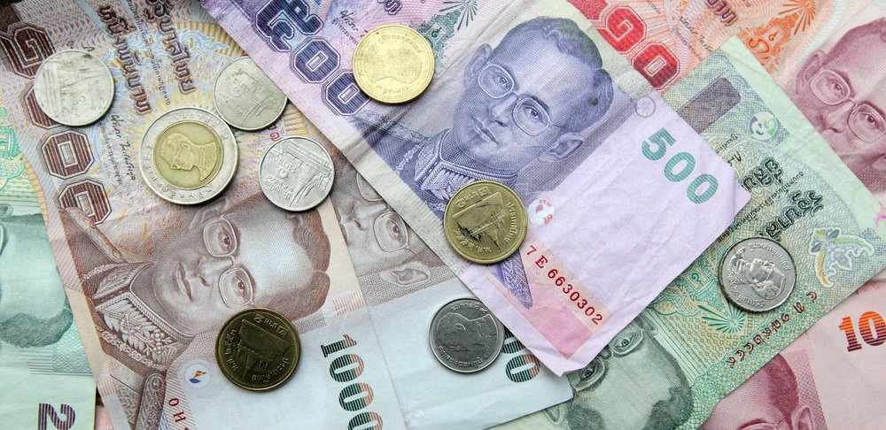

La moneda tailandesa és el Bhat (THB). Hi ha bitllets de 20 (verds), 50 (blaus), 100 (taronges), 500 (morats) i 1000 bath (beix). I hi ha monedes de 1,2,5 i 10 bahts i de 1, 10, 25 i 50 Satangs que són l’equivalent als cèntims. 100 Satangs són 1 Bhat.
No hi ha limitació per a la quantitat de diners que pots portar al país, i el tipus de canvi aproximat és de:
1 Euro = 37 Bhats
Els bitllets grans tenen un canvi una mica més favorable que els petits, així que si portes bitllets de 50 euros millor.
Podràs canviar en centenars de llocs. Des de l’aeroport, passant per qualsevol banc o per oficines de canvi de moneda que hi ha a les zones turístiques o en els hotels. La millor opció són els bancs o les oficines de canvi al carrer.
